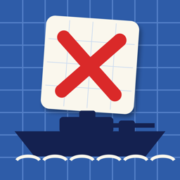

SalvoSea Battle · Морской бойPrivacy Policy
Effective October 6, 2026
In short: Salvo collects no data about you. There are no accounts, no ads, no analytics, no tracking and no servers of our own. Your games stay on your device. The few things that leave it (online moves, purchases, synced progress) are handled by Apple's own services.
This policy explains how the iOS and iPadOS app Salvo: Sea Battle ("Salvo", "the app") handles information. The app is made by Ernist Isabekov, an independent developer ("I", "me").
Information I collect
None. I do not collect, store, sell or share any personal information, and I have no servers that receive data from the app. The app contains no advertising, analytics, crash-reporting or tracking code, and no third-party SDKs.
What stays on your device
- Your settings (rules, sound, haptics, colours).
- Your matches against the computer and Pass & Play matches, so you can continue them later.
- For each online match, your fleet layout and a secret random value used to prove you played fairly (see below).
This information is stored only in the app's private storage on your device. Deleting the app deletes it.
Apple services the app uses
Some features use Apple services. When you use them, Apple processes the related information under Apple's Privacy Policy; I do not receive it.
- iCloud key-value storage: your campaign progress (which captains you have beaten, win counts and Daily Challenge scores) is synced between your own devices through your iCloud account. It contains no personal details.
- Game Center: if you sign in to Game Center, online matches, leaderboards and achievements go through it. Your opponent sees your Game Center nickname. Online matches send your moves and their results through Game Center. Your fleet layout stays on your device until the match ends; then it is revealed to your opponent so both apps can check that every reported result was honest. Leaderboard scores (Daily Challenge moves, wins against the Admiral) and achievements are visible to other Game Center players as Game Center allows.
- App Store / In-App Purchase: the optional "Full Fleet" purchase is processed entirely by Apple. I never see your payment details; the app only receives confirmation from Apple that the purchase exists.
Tracking
The app does not track you across apps or websites, does not use the advertising identifier and does not show ads.
Children
Salvo is suitable for all ages and collects no data from anyone, including children. Game Center features follow Apple's own rules and parental controls for child accounts.
Your choices
- You can play without Game Center; online features simply stay off.
- You can turn off iCloud for the app in the Settings app.
- Deleting the app removes everything it stored on your device.
Changes
If this policy changes, I will update this page and the date above. If the app ever starts collecting data, the policy will say so before that version is released.
Contact
Questions about privacy: isabekove@gmail.com
Політика конфіденційності
Діє з 6 жовтня 2026 р.
Коротко: «Залп» не збирає про вас жодних даних. Немає акаунтів, реклами, аналітики, стеження та власних серверів. Ваші партії залишаються на пристрої. Те небагато, що його залишає (ходи онлайн, покупки, синхронізація прогресу), обробляють сервіси Apple.
Ця політика описує, як застосунок для iOS та iPadOS Salvo: Sea Battle («Залп», «застосунок») поводиться з інформацією. Застосунок створено незалежним розробником Ерністом Ісабековим («я»).
Які дані я збираю
Жодних. Я не збираю, не зберігаю, не продаю й не передаю особисту інформацію, і в мене немає серверів, що отримують дані від застосунку. У застосунку немає реклами, аналітики, звітів про збої, стеження та сторонніх SDK.
Що зберігається на вашому пристрої
- Налаштування (правила, звук, вібрація, кольори).
- Партії проти комп’ютера та ігри вдвох, щоб їх можна було продовжити.
- Для кожної онлайн-партії: розстановка вашого флоту й секретне випадкове значення, яке доводить чесність гри (див. нижче).
Усе це зберігається лише в закритому сховищі застосунку на вашому пристрої та видаляється разом із застосунком.
Сервіси Apple
Деякі функції використовують сервіси Apple. Пов’язану інформацію обробляє Apple згідно з Політикою конфіденційності Apple; я її не отримую.
- iCloud (сховище «ключ-значення»): прогрес кампанії (яких капітанів ви перемогли, кількість перемог, результати флоту дня) синхронізується між вашими пристроями через ваш iCloud. Особистих даних там немає.
- Game Center: якщо ви увійшли в Game Center, через нього відбуваються онлайн-партії, таблиці рекордів і досягнення. Суперник бачить ваш нік у Game Center. В онлайн-партії через Game Center передаються ваші ходи та їхні результати. Розстановка флоту залишається на пристрої до кінця партії, потім розкривається суперникові, щоб обидва застосунки перевірили чесність усіх результатів. Рекорди й досягнення видно іншим гравцям так, як це передбачено Game Center.
- App Store і вбудовані покупки: необов’язкову покупку «Весь флот» повністю проводить Apple. Я не бачу ваших платіжних даних; застосунок отримує від Apple лише підтвердження покупки.
Відстеження
Застосунок не відстежує вас в інших застосунках і на сайтах, не використовує рекламний ідентифікатор і не показує рекламу.
Діти
«Залп» підходить для будь-якого віку й ні в кого не збирає даних, зокрема в дітей. Функції Game Center підпорядковуються правилам і батьківському контролю Apple для дитячих облікових записів.
Ваш вибір
- Можна грати без Game Center, онлайн-функції просто буде вимкнено.
- iCloud для застосунку можна вимкнути в застосунку «Параметри».
- Видалення застосунку стирає все, що він зберігав на пристрої.
Зміни
Якщо політика зміниться, я оновлю цю сторінку й дату вище. Якщо застосунок колись почне збирати дані, політика повідомить про це до виходу такої версії.
Зв’язок
Питання щодо конфіденційності: isabekove@gmail.com